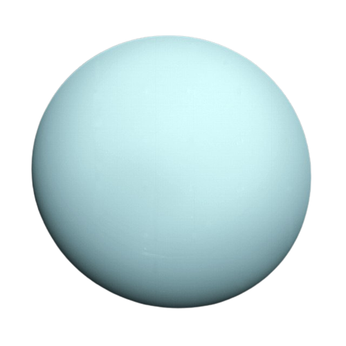

Uranus är ungefär fyra gånger så stor som jorden, och är omgiven
av svaga ringar och mer än två dussin små månar. Uranus och
systerplaneten Neptunus kallas för solsystemets isjättar,
och det är lätt att tänka att det beror på planeternas kalla blåa
färg. Färgen har däremot ingenting med traditionell is att göra.
Det är visserligen kallt på Uranus, eftersom medelavståndet till
solen är nästan 3 miljarder kilometer, eller 20 gånger så långt som
mellan solen och jorden. Den yttre atmosfären håller en kylig temperatur
på närmare 220 minusgrader, men det är Uranus och Neptunus beståndsdelar
som gett upphov till smeknamnet isjättar.